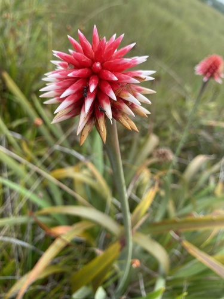

Rapateaceae
Rapatea Family
Rapateaceae is a distinctive family of monocotyledonous, perennial herbs primarily found in nutrient-poor, wet, acidic environments of tropical South America, with a significant concentration in the ancient Guiana Shield region (including the iconic tepuis). A single species also occurs disjunctly in West Africa. They are recognized by their basal rosettes of often stiff, sword-shaped leaves and striking inflorescences – dense heads or spikes borne on scapes and subtended by prominent, often colorful spathe-like bracts.
Overview
The Rapateaceae family comprises roughly 16 genera and nearly 100 species adapted to specific ecological niches. Their center of diversity is the Guiana Shield, a Precambrian geological formation known for its unique biodiversity, table-top mountains (tepuis), savannas, and rainforests. Many Rapateaceae species are characteristic, even dominant, elements of the vegetation in these habitats, particularly in marshy areas, on sandy soils, or atop the tepuis.
These plants are typically robust herbs forming clumps or tussocks. Their most visually striking feature is the inflorescence, where numerous small flowers are clustered into a dense head or spike, protected and made conspicuous by large, often brightly colored (yellow, red, orange, white) bracts resembling spathes. This structure likely plays a role in attracting pollinators, which can include insects and possibly hummingbirds.
The family's restricted distribution, particularly the disjunction between South America and West Africa, makes it of significant interest for biogeographical studies concerning the historical connections between these continents.
Quick Facts
- Scientific Name: Rapateaceae
- Common Name: Rapatea Family
- Number of Genera: Approximately 16
- Number of Species: Approximately 94
- Distribution: Primarily Neotropical (Guiana Shield, northern South America), one species in West Africa.
- Evolutionary Group: Monocots - Poales
- Habitat: Nutrient-poor, acidic, wet soils; savannas, marshes, tepui summits.
Key Characteristics
Growth Form and Habit
Perennial, often robust, terrestrial or marsh herbs. They typically grow from short rhizomes, forming basal rosettes or clumps.
Leaves
Leaves are basal, arranged spirally or in 2-ranks (distichous). They are typically simple, entire, linear, lanceolate, or ensiform (sword-shaped), often stiff and fibrous with parallel venation. A distinct sheathing base is characteristic.
Stems
The vegetative stem is usually reduced to a short rhizome. The reproductive structure is borne on a distinct, often long, leafless flowering stalk called a scape.
Roots
Fibrous root system.
Sexuality and Inflorescence
The inflorescence is the most distinctive feature: typically a dense, many-flowered head (capitulum) or spike, borne terminally on a scape. This primary inflorescence is characteristically subtended by one or more large, persistent, often colorful, spathe-like bracts. Individual flowers within the head are often subtended by smaller bracteoles. Flowers are perfect (bisexual).
Flowers
Flowers are actinomorphic (radially symmetrical) or slightly zygomorphic, generally 3-merous, and often yellow or white.
- Sepals: 3, usually free or slightly fused at the base, often membranous or chaffy (scarious).
- Petals: 3, often delicate and short-lived (ephemeral), usually fused at the base to form a short tube.
- Stamens: 6, typically arranged in two whorls of 3; filaments may be fused to the corolla tube; anthers usually open via terminal pores or short slits (poricidal or near-poricidal dehiscence).
- Ovary: Superior, composed of 3 fused carpels forming a 3-locular ovary. Placentation is usually axile (sometimes parietal). A single style is present, often with a small, capitate (head-like) or slightly 3-lobed stigma.
Fruits and Seeds
The fruit is a loculicidal capsule, meaning it splits open along the midrib of each of the 3 locules to release the seeds. Seeds are typically small and numerous.
Chemical Characteristics
There are no widely recognized, distinctive chemical markers defining the family in the way saponins or glucosinolates characterize some other families. Their chemistry likely reflects adaptations to survive in nutrient-poor, acidic soil conditions.
Field Identification
Identifying Rapateaceae relies on recognizing their herbaceous monocot habit combined with their unique inflorescence structure and specific habitat:
Primary Identification Features
- Habit: Perennial herb, often robust, forming basal rosettes or clumps.
- Leaves: Basal, linear to sword-shaped, with sheathing bases.
- Inflorescence: Dense head or spike on a distinct scape.
- Spathe-like Bracts: Inflorescence subtended by 1 or more large, prominent, often colorful bracts.
- Flowers: 3 sepals, 3 petals (often yellow/white), 6 stamens.
- Fruit: Capsule (3-parted).
- Habitat/Location: Wet, nutrient-poor, acidic soils, primarily in the Guiana Shield region of South America (or one species in West Africa).
Secondary Identification Features
- Anther Dehiscence: Anthers opening by pores or short slits (requires magnification).
- Leaf Texture: Often stiff and fibrous.
- Association with Habitat: Strong indicator when found in characteristic habitats like tepui summits or associated savannas/marshes.
Seasonal Identification Tips
- Flowering Season: Varies, but inflorescences are the most diagnostic feature and are often present during wetter periods or specific seasons depending on the species.
- Vegetative State: The basal rosette of characteristic leaves is present year-round.
Common Confusion Points
Rapateaceae can be confused with members of related families in the Poales order:
- Bromeliaceae (Bromeliad family): Also monocots with basal rosettes and often showy inflorescences with colorful bracts. Distinguished by scale-like trichomes often present on leaves, inferior (usually) ovary, fruit often a berry or septicidal capsule, and different stamen/petal structures. Many are epiphytic.
- Xyridaceae (Yellow-eyed Grass family): Herbs with basal linear leaves and flowers in dense heads/spikes on scapes. Distinguished by smaller, less prominent involucral bracts (not large and spathe-like), flowers with only 3 fertile stamens (often alternating with 3 staminodes), and different sepal/petal morphology.
- Eriocaulaceae (Pipewort family): Also form basal rosettes with scapes bearing dense heads of tiny, unisexual flowers. Distinguished by their whitish/grayish flower heads lacking large colorful spathe-like bracts, and complex tiny flower structures.
- Typhaceae (Cattail family): Marsh plants, but have very different dense cylindrical spikes of unisexual, highly reduced flowers, lacking showy bracts.
Field Guide Quick Reference
Look For:
- Perennial herb (often robust)
- Basal rosette of linear/sword-shaped leaves
- Leaves with sheathing bases
- Inflorescence a dense head/spike on scape
- Subtended by large, colorful spathe-like bracts
- Flowers 3-merous, 6 stamens
- Ovary superior
- Fruit a capsule
- Habitat: Guiana Shield / W. Africa
Key Variations:
- Color and number of spathe-like bracts
- Shape of inflorescence (globose head vs. spike)
- Flower color (yellow vs. white)
- Leaf size and rigidity
Notable Examples
Several genera are characteristic of specific environments within the family's range:

Stegolepis spp.
Tepui Stegolepis
This genus is particularly characteristic of the summits of the tepuis in the Guiana Highlands. Species like Stegolepis guianensis often form vast, dominant stands in the open, boggy conditions atop these isolated table mountains. They typically have stiff, upright leaves and showy inflorescences with bright yellow flowers and prominent bracts.

Rapatea spp.
Rapatea
The type genus for the family, Rapatea species are often found in swampy or marshy habitats in lowland areas of northern South America. They typically have broad, fan-like arrangements of leaves and inflorescences with prominent, often pointed, greenish or yellowish spathe-like bracts enclosing the flower head.
Phylogeny and Classification
Rapateaceae is firmly placed within the large monocot order Poales, which also includes grasses, sedges, rushes, bromeliads, and cattails. Within Poales, Rapateaceae belongs to the "bromeliad clade," a group primarily characterized by molecular data that also includes Bromeliaceae, Typhaceae, and Mayacaceae. Its closest relatives are thought to be among these families.
The family represents a distinct lineage that likely originated in South America. The presence of a single species, Maschalocephalus dinklagei, in West Africa is a classic example of a biogeographic disjunction, suggesting a past connection or long-distance dispersal event between the continents, possibly dating back to when South America and Africa were closer together in Gondwana.
Position in Plant Phylogeny
- Kingdom: Plantae
- Clade: Angiosperms (Flowering plants)
- Clade: Monocots
- Order: Poales
- Family: Rapateaceae
Evolutionary Significance
Rapateaceae is significant for several evolutionary and ecological reasons:
- Guiana Shield Endemism: Represents a major radiation within a unique and ancient biodiversity hotspot, showcasing adaptation to specific edaphic (soil) and climatic conditions.
- Biogeography: The South America-West Africa disjunction provides valuable data for understanding historical plant movements and continental drift.
- Phylogenetic Position: Helps resolve relationships within the large and economically important Poales order, particularly within the bromeliad clade.
- Morphological Uniqueness: The combination of basal monocot features with the highly specialized inflorescence structure (head + spathe-like bracts) is distinctive.